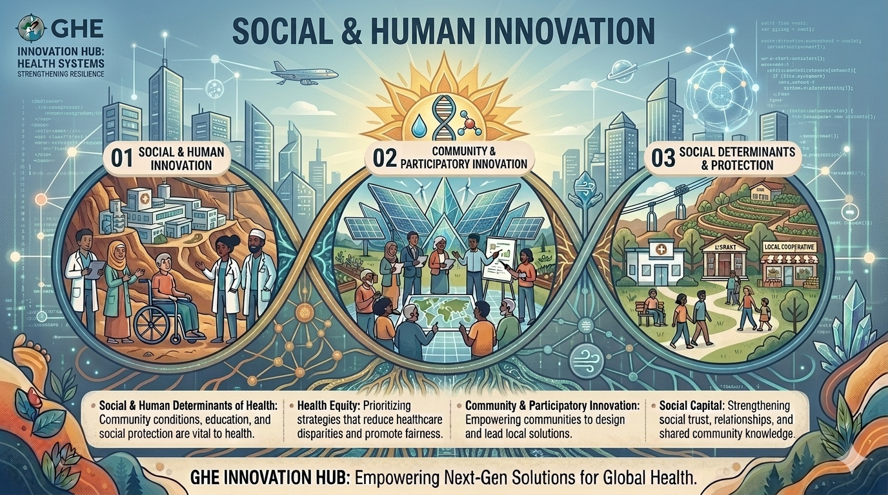

Understand
Learn how people, communities and social systems shape health.
Understand people, communities and societies — and imagine healthier ways forward.
Health is shaped not only by biology and health services, but by the places where people live, learn, work and grow. Social & Human Innovation explores how people, communities, culture, behaviour, equity and participation can become starting points for better futures.

Innovation begins by understanding the world as it is. It develops by asking better questions, connecting ideas, imagining alternatives and reflecting on who those alternatives might affect.
Learn how people, communities and social systems shape health.
Discover evidence, perspectives and experiences.
Identify gaps, inequities, assumptions or opportunities.
See how individual, social and structural factors interact.
Consider possibilities that could create healthier futures.
Develop a conceptual, evidence-informed mini-proposal.
Ask who benefits, what could go wrong and how we would know.
People are not simply recipients of health interventions. They can be partners in understanding problems, defining priorities, generating ideas and imagining solutions.
Learn why meaningful engagement can improve relevance, trust and ownership.
Explore how solutions can be developed with the people who experience a challenge.
Consider how young people can contribute ideas, perspectives and lived experience.
Explore the value of knowledge rooted in place, experience and community.
Understand how relationships and trust can influence health decisions and collective resilience.
A solution that works for one group may not work for another. Responsible innovation asks us to understand difference, accessibility, power and unequal opportunity.
Identify avoidable and unfair differences in health and opportunity.
Ask which populations may experience greater exposure, barriers or consequences.
Explore how multiple social factors can interact and shape experience.
Consider whether information, services and environments can be accessed by different people.
Look beyond individual behaviour to the systems and structures that shape choices and opportunities.
Ask who benefits, who bears risk and whose voice is missing.
Human behaviour does not happen in isolation. Beliefs, social norms, culture, trust, information and the environments around us can all influence decisions.
Explore why people make health-related choices and how environments can make healthier choices easier or harder.
Consider how people find, understand, evaluate and use health information.
Explore how uncertainty and risk can be communicated clearly, honestly and respectfully.
Ask how expectations within groups can influence individual and collective behaviour.
Understand how culture can shape meanings, practices, relationships and approaches to health.
Investigate how misinformation, uncertainty and trust affect health decisions.
Health systems and communities can be placed under extraordinary pressure by conflict, displacement and emergencies. Humanitarian health asks us to think about health while keeping protection, dignity and human rights at the centre.
The people affected by a crisis should never be reduced to a problem to solve. Their dignity, agency and perspectives matter.
Explore how displacement can affect continuity of care, housing, safety and wellbeing.
Consider health needs across migration journeys and new communities.
Understand how conflict can disrupt health services, infrastructure and social wellbeing.
Explore how multiple organizations and communities coordinate during emergencies.
Consider the importance of social connection, psychological wellbeing and community support.
Ask how health innovation can avoid creating new vulnerabilities or harms.
Young people are not only future health professionals, researchers or policymakers. They are people shaping health and society right now.
Explore the physical, mental and social factors that influence health during adolescence.
Imagine schools as environments that support health, belonging, learning and wellbeing.
Consider how relationships, environments and social support influence wellbeing.
Explore how communities and environments can enable movement and active lifestyles.
Question how digital spaces influence connection, information, identity and wellbeing.
Think about how healthy environments and behaviours can accumulate benefits across the life course.
Social innovation is not simply generating a clever idea. It is a process of understanding context, listening to people, examining evidence, connecting systems and reflecting on consequences.
Identify the people, communities, institutions and environments involved.
Look for credible evidence, different perspectives and lived experience.
Challenge assumptions and identify what could be different.
Connect individual experiences with social, cultural and structural factors.
Generate possibilities without assuming that the first idea is the best idea.
Turn your thinking into a concise conceptual mini-proposal.
Consider equity, unintended consequences, feasibility, sustainability and how you would know whether an idea helps.
Choose a challenge. Explore its context. Then use the GHE canvas to develop a conceptual, evidence-informed proposal.
Use the prompts to structure your thinking.
What challenge are you trying to understand?
What credible evidence supports your understanding?
Who and what influences the problem?
What could work differently?
Who is the idea intended to help?
What unintended consequences could occur?
What might make the idea possible or difficult?
What evidence might suggest that it helps?
Learning boundary: These mini-proposals are educational concepts. They are not clinical advice, engineering designs, public-health operational plans or instructions for real-world implementation.
Use trusted organizations to investigate questions, compare perspectives and find evidence for your own ideas.
These questions test systems thinking rather than memorization.
Correct: B. Social determinants include the social and economic conditions that shape people's opportunities for health.
Correct: C. Participation can add perspectives that may otherwise be missed during problem definition and idea generation.
Correct: B. Questioning assumptions is an important part of responsible and equitable innovation.
Correct: A. Responsible innovation considers distribution of benefits, risks, access and unintended consequences.
Social and human innovation can affect real people. Responsible innovators therefore think beyond novelty and ask difficult questions about power, fairness, unintended consequences and sustainability.
Could the idea reduce an inequity — or accidentally widen it?
Whose perspective shaped the idea? Whose perspective is missing?
What unintended consequences or risks should be considered?
What resources, relationships and conditions would influence the idea?
Could the idea remain useful and appropriate over time?
What would we need to learn before making stronger claims?
The Global Health & Biomedical Discovery Centre brings together different ways of understanding health. Social & Human Innovation connects naturally with biomedical science, data and digital technologies, health systems, planetary health and community knowledge.
Explore the GHBDC ecosystemMove between the Innovation Worlds and explore how different perspectives can connect to create better questions and possibilities.
From biology and discovery to prevention and therapeutics.
Data, computation, digital health and intelligent systems.
Systems, sustainability, resilience, climate and One Health.
People, communities, equity, culture and human-centred change.
Innovation begins when we stop asking only “What is the problem?” and start asking “Why does it exist, who experiences it differently, and what could we imagine together?”
Return to the beginning
Social determinants
of health
Health is influenced by the conditions in which people are born, grow, learn, work, live and age. These conditions can create opportunities for health — or produce avoidable inequalities.
Education
How do educational opportunities influence health, health literacy and future possibilities?
Innovation question: How might learning environments support lifelong health?Income & Employment
Explore how economic security, work and working conditions influence health and wellbeing.
Where might economic conditions create avoidable health gaps?Housing
Consider how safe, secure and affordable housing can shape physical and mental wellbeing.
What would a healthier housing environment look like?Gender & Equity
Examine how social structures, identity, discrimination and unequal opportunity can influence health.
How can innovation reduce barriers rather than reinforce them?Food Security
Explore the relationship between access to nutritious food, affordability, culture and health.
How could communities make healthy choices more accessible?Social Protection
Understand how social safety nets can influence resilience, security and health across the life course.
What makes a support system responsive and inclusive?A health problem may have a cause outside the health sector.
Before designing an intervention, ask: What conditions are shaping the problem? The answer may involve education, housing, income, transport, food, environment, social relationships or policy.